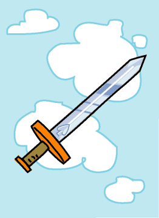

→
Damian Cugley →
Alleged Tarot 2002 →
png →
→
Damian Cugley →
Alleged Tarot 2002 →
png →
| « The King of Cups | The Two of Swords » | |
|  | ||
|
The Ace of Wands The Ace of Cups The Ace of Coins |
||
Upright: intellect, reason, justice
Reversed: cruelty, injustice
Nowadays the literally martial aspect of our lives is, happily, less important for many of us than it was in mediaeval times, so the meaning of the suit of Swords is interpreted more broadly. Swords straightforwardly represent strife, conflict and destruction. Justice and the courts were functions of the milita, so Swords represents justice and judicial proceedings. Warfare required strategy and analysis, so Swords also represents abstract thought and rationality, especially in a reductionist sense.
The background reminds us that the suit of Swords is associated with the element of Air. I have shown the symbol of the modern suit of Spades engraved on the blade.
See also Thirteen’s description on the Aeclectic Tarot site
If your browser supports SVG, then you should visit the SVG version of this page. It is so much more cool!